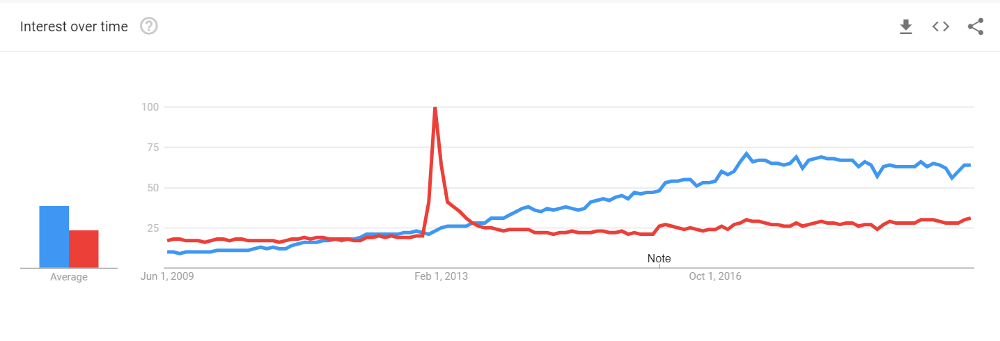

Report page
A01
Did you before know about the techniques Git, GitHub, Markdown and/or GitHub Pages?
I used git hub before, however i did not know about Markdown or GitHub Pages.
Have you ever created websites before?
I have never created websites before. I always wanted to learn how to create good websites sadly, I never had the time.
Briefly explain your experience and knowledge of web application development.
So far i have worked with developing android mobile applications and desktop application using java. WE did not have in our programme "software development", courses related to web applications. As such my experience and knowledge with web development is very low. I am very exicted to have this course. With this course I believe I will gain the basic knowledge needed to make a good dynamic website.
What is your TIL for this course section
In this course section i have learned about forking. It is the first time I have used the fork tool. I have learnt how to uptade a forked repo. I have learnt how to set up Git pages. I have leant to use Visual studio. I have learnt to create links in html.
A02
Have you any previous experience of HTML, CSS and/or JavaScript?
No, I do not have any experience with html, css nor JavaScript
Explain the role of HTML, CSS and JavaScript in web development
HTML provides the basic structure of sites, which is enhanced and modified by other technologies like CSS and JavaScript. CSS is used to control presentation, formatting, and layout. JavaScript is used to control the behavior of different elements.
Give a brief explanation of how the browser, the HTTP protocol and the web server interacts.
The browser send an http request to the web server asking for a file or a page, If the server has the requested data it sends it to the browser with the a successfull message(200) and closes the connection. If the server does not have have the data it sends an error message to the browser(404) and closes the connection.
What is your TIL for this course section?
I was new to css and javascript, hence I learned how to do styling and using javascript how to animate the page.
A03
Do you have any previous experience of client side JavaScript?
No I did not have any experinece with client side javascript.
Can you compare and relate the JavaScript language to any other language you know?
In this programme that is software development for the web, we have learnt java. On my own I have learnt a little bit of C languange and Arduino. When it comes to naming conventions javascript is similar to java. When it comes to syntax javascript is more similar to C language. However when it comes to declaring variables, javascript is very different as it is loosely typed language.
Describe how you worked with the coding exercise, what grade do you aim for and how did your code turn out to be?
I aim for grade 5.I have done all the tasks for grade 3, 4 and 5. Out of all tasks i found challenging fetching data from a json object and displaying it to a table, however after long hours of stackoverflow search and youtube videos I managed to solve it. Hence I completed all the tasks for grade 3, grade 4 and grade 5.
What is your TIL for this course section?
I learned more on how to use fetch and its difference with AJAX.
A04
Tell me about your previous experience on node/npm or any equal programming tools.
I did not have any previous experience on node/npm or any other programming tools that I can remeber of.
How do you feel about working with JavaScript, Node and Express?
I found it very intersting to work with Node. The idea to run your javascript code out of a browser is very interesting. Tring to implement functionalities with pure Node could become complicated at times and might distract you from your actual bussiness logic of your application. Having a framework such us Express is very helpfull and time saving, this way you can spend your time more on functionalities that are directly related to the bussiness logic of your application.
Explain how you did take on the coding assignment, did you have a plan and did it work?
In the beginning since I was new to the world of Node, it took me a lot of time just to understand the basics, infact I bought a couple of videos from udemy and watched a series of tutorias on a youtube channel called Net ninja.
What grade did you aim for and was it a difficult level?
I aim for grade 5 on this assignment.I have done all the tasks for grade 3, 4 and 5.It was not difficult but it took me a lot of time just to get started.
What is your TIL for this course section?
I learnt Node, NodeExperss and npm commands.
A05
How do you feel about PHP as a programming language?
Its a very good multi purpose programming language. With PHP we can handle a lot of tasks and can make very good interactive/dynamic websites. We can use php to create, update, delete and read files on servers and databases. If we want convert important data on our files to Excel or PDF files for easier analysis, PHP can pull the data and present it in both forms automatically so we won’t need to do any manual conversion. My general feeling about PHP is that even though it can be used for complex code, it is easy to learn!
Can you compare PHP to other languages you know?
The synntax is similar to thet of C and C++.
Describe how you took on the coding exercise, what grade did you aim for and are you satisfied with the result?
I aim for grade 5.I have done all the tasks for grade 3, 4 and 5. To complete the task I got inspiratinn from a video tutorial on php from a channel called polodev. Yes, I am satisfied with my results.
What is your TIL for this course section?
I have learnt a lot in terms I did not have any previuos knowledge about php. I also refreshed my knowledge on MYSQL.
A06
What is your own opinion on popularity of programming languages and what are your thoughts of future popularity among programming languages?
My opinion on popularity of programming languages is that is directly related with the corporate world. A language could be easy to learn, have many libraries but if it is not backed or used by companies, it want last long in short there must be a huge market opportunity. In my view Java and PHP will continue to rise as they are hot in the corporate world. Many organizations use Spring(Java) and Codeigniter(PHP) as their backend frameworkk. R and MATLAB are also gone remain popular in the Data Analitics world. C/C++ and Golang are gone remain the top choices in building low-latency and scalable systems. Phyton and JavaScript are gone remain hot in the startup world, as many startups use Django(Phyton), Flask(Phyton), and NodeJS(JavaScript) as their backend frameworks.
What will be your own choice for selecting future programming languages?
I have two choices one is Javascript the other is Phyton. If we are intersted in building real-time applications I would choose javascript beacuse of its performance speed compared to Phyton. When it comes to Data Science I would go for Phyton. In genreal if it was not for performance speed I would have choosen Phyton because of its simplicity.
Do your own investigation on https://trends.google.com (Links to an external site.) to customize your own comparison on programming languages (or frameworks) and elaborate on the results.
When it comes to backend Javascript has not been in the picutre till the creation of Node.js. I will compare node.js with Django framework using googel trends. The blue graph represents Node.js while the red represents Django framework. As it can been seen by the graph till 2013 Django was more popular. After 2013 however the popularity for Node.js took over Django. It is important to mention that Django framework was created in the fall of 2003 and Node.js in May of 2009. This graphs starts comparing both frameworks worldwide trends from 2009.

If you were to recommend a language/framework/technology to your potential employer and your next large project, what would it be and how would you “sell it”?
I would recommend Django framework. I would "sell it " mentioning that Django is a collection of Python libraries allowing you to quickly and efficiently create a quality Web application, and is suitable for both frontend and backend. More precisely,for the front end, Django helps you with data selection, formating and display.
What is your TIL for this course section?
I have never used Google Trends and hence I have learnt how to use googel trends. I have learnt the existance of many different programming languages other from the one I know and why certain languages become popular and why others dont survive.
A07
Try to explain the platform .NET (C#, ASP.NET) to a skilled programmer, but newbie to this Microsoft technology.
C# is a general-purpose, modern and object-oriented programming language
pronounced as “C sharp”. It was developed by Microsoft led by
Anders Hejlsberg and his team within the .Net initiative and was approved by the
European Computer
Manufacturers Association (ECMA) and International Standards Organization (ISO).
C# is a lot similar to Java syntactically and is easy for the users who have
knowledge of C, C++ or Java.
C# has manyreasons for being popular and in demand. Its easy to start,
its widely used for developing Desktop and Web Application, it has a huge community and its
used in game development. In short C# is like Java, which you can use to develop multiple
differnt type of applications.
ASP. NET is a server side web technology, like PHP or JSP. C# is used when
developing ASP.net.
.NET is a developer platform made up of tools, programming languages,
and libraries for building many different types of applications.ASP.NET extends
the .NET developer platform with tools and libraries specifically for
building web apps.
Elaborate by comparing .NET technologies with the other technologies we learned during the course.
PHP is a programming language whereas ASP.NET is a programming framework. Websites developed by ASP.NET may use C#, but also other languages such as J#. ASP.NET is compiled whereas PHP is interpreted. This means that ASP.NET websites generally have shorter execution times, but also that changing the website becomes more complicated as it needs to be re-compiled (whereas for PHP websites you can simply replace the new code). The decrease of execution time is, however, seldom noticable. This is because most of the page rendering times arises from setting up the connection and querying databases. Visual Studio provides numerous "shortcuts" to facilitate programming in ASP.NET. Dealing with action events (e.g. user clicks), forms, databases etc. is relatively straightforward and tends to take less time compared to PHP where everything needs to be literally scripted. This increases the risk of security flaws such as SQL injection. Nevertheless, inexperienced programming is, to my opinion, equally harmful in both environments. ASP.NET is designed for windows machines, whereas PHP is platform free (and typically runs on Linux servers). Besides the fact that Linux servers are well known for their stability and security, Windows is a licensed platform which implies that hosting an ASP.NET site will usually involve more costs
Describe how you took on the coding exercise, what grade did you aim for and are you satisfied with the result?
I aim for grade 4.I have done all the tasks for grade 3 and 4. In order to to do the exercise I watched the posted youtube videos and read documentation.
What is your TIL for this course section?
I am new to the .net world in general. Also I did not use C# before so it was anew thing for me.
A08
What is your TIL for this course section?
Analysis
We made an analysis of performance of three different websites :
Facebook, Amazon, ISSUU.Members:
- Kubrom Mulugheta
- Martin Jjooga
- Ibrahim Olakunle
- Stephan Ngaha
Our findingsA09
Elaborate on a few (3-5) different security issues or concerns, from your own experience, related to web application security and relate them to the OWASP top ten.
I am quite new to the web development world hence I dont have much
experience related to secutity. Nevertheless from the database course we took
in the first year one security issue that come to my attention was sql injection (SQLi)
attacks.
SQL Injection (SQLi) is a type of an injection attack that makes it possible to execute
malicious SQL statements. These statements control a database server behind a web
application. Attackers can use SQL Injection vulnerabilities to bypass application
security measures.
They can go around authentication and authorization of a web page
or web application and retrieve the content of the entire SQL database.
They can also use SQL Injection to add, modify, and delete records in the database.
An SQL Injection vulnerability may affect any website or web application that
uses an SQL database such as MySQL, Oracle, SQL Server, or others.
Criminals may use it to gain unauthorized access to your sensitive
data: customer information, personal data, trade secrets, intellectual property,
and more. SQL Injection attacks are one of the oldest, most prevalent, and most
dangerous web application vulnerabilities.
The OWASP organization (Open Web Application Security Project) lists injections in their OWASP Top 10 document as the number one threat to web application security.
Summarize by providing your own guidelines to a new web programmer on the topic “The essential guidelines to follow to create secure web applications”.
- Follow the OWASP Top Ten. These security vulnerabilities target the confidentiality, integrity, and availability of an application, its developers, and its users. They cover such attack vectors as injection attacks, authentication and session management, security misconfiguration, and sensitive data exposure.
- Get an Application Security Audit.
- Implement Proper Logging
- Use Real-time Security Monitoring and Protection.
- Encrypt Everything
- Harden Everything. Now that all traffic and data is encrypted, from operating systems to software development frameworks you need to ensure that they’re sufficiently hardened.
- Keep Your Servers Up to Date. Make sure that your servers are set to update to the latest security releases as they become available.
- Keep Your Software Up to Date. As well as keeping the operating system up to date, you need to keep your application framework and third party libraries up to date as well.
- Stay Abreast of the Latest Vulnerabilities this is strongly tied to the previous point. Given the number of attack vectors in play today, vectors such as Cross-site scripting, code injection, SQL injection, insecure direct object references, and cross-site request forgery it’s hard to both stay abreast of them as well as to know what the new ones are.
What is your TIL for this course section?
I didn’t know about OWASP top-10 before.It is important to learn how to write an efficient code against these security vulnerabilities.